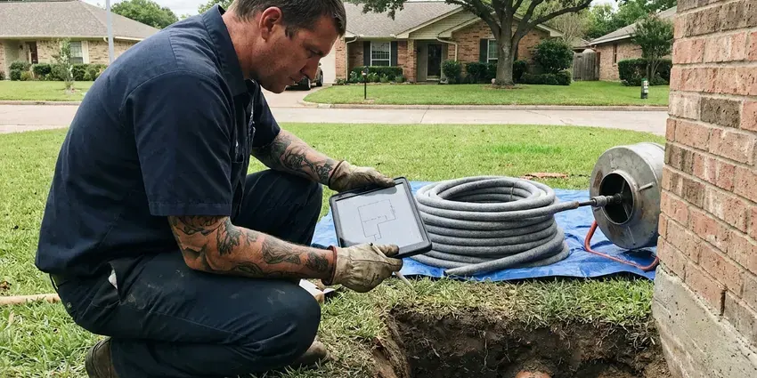

Gas Leak Repair in Hamilton, OH
Gas leak repair in Hamilton, OH with a combustible gas detector and a test gauge, so we fix the right joint the first time.
- Insured Gas Work
- Upfront Pricing
- Gauge Pressure Tested Repairs
- Yard Line Repairs

Licensed Gas Leak Repairs in Hamilton, OH.
Red tag on the meter? We make the repair and send the test results to the utility.
Gas Leak Repair in Hamilton, OH by Licensed and Insured Plumbers
HRL Plumbing works gas leaks in older houses with black iron and steel yard lines and in newer ones plumbed with CSST. Each material fails differently. Threads go on black iron, fittings or lightning damage go on CSST, and rust takes the buried steel. That pattern narrows the search, so we replace one section and not the whole line.
Our expertise includes:
- Sediment trap installation where code requires
- Appliance connector and ball valve replacement
- Gauge pressure testing of every gas branch

Additional Plumbing Repair Services in Hamilton, OH
We offer expert plumbing repair services across Hamilton, OH to fix leaks, restore flow, and keep your system running smoothly.


Customers
Why Choose HRL Plumbing for Gas Leak Repair in Hamilton, OH?
Picking a plumber for gas work comes down to two things, the license and whether they test both before and after the repair. A lot of people will tighten a joint and call it done. HRL Plumbing sends licensed gas plumbers who carry a gauge and use it on every call. The before and after readings go on your invoice.
- Fast Response, We head out as soon as the utility clears the scene.
- Permits Handled, We pull the permit and meet the inspector so you do not have to.
- Gauge Tested, Every repair is pressure tested before the gas goes back on.
Citywide Coverage
Townhouses and condos bring their own wrinkle, since the meter bank may serve several units and the shutoff might be in a shared room. We work with the HOA or building manager to get access. Shared meters complicate testing. We test only your branch unless the association asks for more, and we label your valve so the next tech finds it in seconds.
Experienced Team
Our gas plumbers carry a fuel gas license on top of their plumbing license where one is required, and most have ten years or more on gas calls. They test before and after every job, even a connector swap. Slow leaks are their specialty. Years of slow leaks taught them where to look first, starting with crawlspace unions.
Safety-First Approach
Utility red tags are respected. Locks and tags on the meter stay where the utility put them. After the repair and test, we notify the utility, and they send someone to open the meter and relight, or they let us relight where their policy allows.
Trusted Certified Hamilton Plumbing Services Professionals
At HRL Plumbing, we take pride in licensed, certified plumbing services throughout Hamilton, OH. Credentials matter in this trade. Every repair, install and maintenance visit follows strict safety and quality rules, and the plumbers doing the work carry recognized industry credentials.
Call Us Now PHCC Plumbing Contractor Recognition
PHCC Plumbing Contractor Recognition Better Business Bureau (BBB) Accreditation
Better Business Bureau (BBB) Accreditation Angi Certified Pro
Angi Certified Pro ISO 9001 Quality Management Certification
ISO 9001 Quality Management CertificationInsured Gas Leak Repair in Hamilton, OH
Outdoor Gas Line Repair in Hamilton
Grills, fire pits, pool heaters and patio heaters often sit at the end of a long buried line that nobody has looked at since it went in. More outdoor lines get hit by shovels and fence augers than fail from rust. Dead grass is a tell. The outdoor branch gets isolated and tested by itself, then the bad run is replaced with polyethylene and a tracer. Above-ground stub-ups get a fresh riser and a shutoff valve.

Interior Gas Pipe Repair in Hamilton, OH
Inside the house, gas leaks hide at unions in the basement and at the threaded nipple behind the furnace, places nobody looks. We work from the meter inward, testing each section as we go. Drywall stays intact when possible. Rerouting with CSST past a leak in a finished wall is often cheaper than cutting and patching drywall. Nothing is turned back on until the gauge holds steady.
Propane Gas Leak Repair in Hamilton, OH
Propane behaves differently from natural gas because it is heavier than air, so a leak settles into basements and crawlspaces instead of rising. We check both regulators, the one at the tank and the one at the house. Low spots get sniffed first. If the supplier owns the tank, they handle the tank side and we handle the piping from there to the appliances. Rural properties with buried tanks get a line test too.
Residential Gas Leak Detection in Hamilton
A gas leak in a house rarely sits where the smell is strongest, because gas drifts along joists and collects in closets and basements. The first step is a pressure gauge on the piping, which tells us whether the system is actually losing gas. Then the sniffer comes out. Our combustible gas detector reads in parts per million, so we can follow the reading fitting by fitting until it peaks. Bubble solution on the suspect joint gives the final confirmation.
Red Tag Gas Repairs in Hamilton
A red tag on your meter or appliance means the utility found a leak or unsafe condition and will not restore gas until a licensed contractor fixes it. We read the tag first, since it lists what the utility found. Then we test everything. Once the repair is done, we perform the required test and send the documentation to the utility or the inspector. Relights are scheduled with the utility, usually within a day or two.
Permit and Inspection Coordination in Hamilton
Replacing more than a connector usually means a permit, and in Hamilton the inspector will want to see a gauge holding pressure before the pipe is covered. The permit and the inspection booking are on us. Most inspections take under twenty minutes. The test is set to whatever the local fuel gas code requires, often a few psi held for fifteen minutes or longer. The signed permit card stays with your records.
Commercial Gas Leak Repair in Hamilton
Commercial gas piping often runs at 2 psi or higher with regulators at each appliance bank, so a leak test there is not the same as a house test. Regulator vents and lockup pressure get checked along with every joint. Rooftop units leak too. Where downtime costs you money, we isolate only the affected branch and keep the rest of the building running. Staff get a short briefing on the shutoff locations.

Underground Gas Line Repair in Hamilton
Yard lines run from the meter to the house, and often on to a detached garage, a pool heater, a grill or an outdoor kitchen. Buried steel loses its coating to rocks in the backfill and then rusts through. Roots and settling do damage too. After an 811 locate, we excavate, cut out the failed run and lay polyethylene with a tracer wire beside it. Sand goes around the new pipe before backfill, per Hamilton trench rules.
Gas Leak Plumbers Near You in Hamilton, OH
Response time is only half of it. A gas call also needs a licensed plumber who will test the whole system, not just tighten the fitting you pointed at. Our Hamilton, OH crew carries a manometer and a combustible gas detector on every call. Nearly every leak gets found and repaired on the first trip.
Searching 'gas leak repair near me' usually happens with a smell in the house, so distance matters. HRL Plumbing keeps gas-qualified plumbers working across Hamilton, OH, with detectors and pipe on every truck. We can usually reach most neighborhoods within an hour or two of the utility clearing the scene and shutting the meter. Let dispatch know about any meter tag.
HRL Plumbing at a Glance
- Licensed and insured plumbers serving Hamilton, OH
- Same-day appointments and 24/7 emergency response
- Upfront, flat-rate pricing before work begins
- 4.9-star rated by 673+ Ohio customers
Hamilton Map
Hamilton Information
- Population
- 62,997
- Area codes
- 513/937/419
- Service area
- Hamilton and towns within a 40 mile drive
- Nearby
- Middletown, Cincinnati, Kettering, Dayton
A long heating season keeps water heaters and boilers working hard, so yearly maintenance helps avoid midwinter breakdowns. Weather, moisture and settling all work on buried gas pipe, and a periodic leak test catches trouble in Hamilton, OH homes before it gets serious.
Expert Services
Reach out to HRL Plumbing for honest, reliable plumbing from people who know the trade in Hamilton, OH.
Our Specialized Plumbing Services in Hamilton, OH
At HRL Plumbing, we handle the full list of plumbing services across Hamilton, OH. From leak detection to full system installs, our team works fast and charges fair prices on homes and commercial properties alike. Here are the core services we offer:


How a Gas Leak Repair Works in Hamilton, OH
From your call to the final gauge reading, here is the sequence.
Call Us
Once you are outside and the utility has been called, phone (740) 449-7505. Dispatch asks where you smell it and whether the meter was shut or tagged.
Make It Safe
The tech confirms the gas is off, ventilates the area and clears ignition sources before any tools come out.
Find the Leak
A gauge confirms the system is losing pressure, then a combustible gas detector and bubble solution narrow it to one joint.
Frequently Asked Questions About Gas Leak Repair in Hamilton
Most gas leak repairs in Hamilton, OH land between $150 and $2,000, and the spread comes from where the leak is and how hard it is to reach. Tightening or remaking an exposed fitting sits at the low end. Excavation costs more. Buried pipe or a repair inside finished walls pushes the price toward the top, sometimes past $2,000. You get a written number once the leak is found.
CSST is safe when it is installed by a certified installer, sized correctly and bonded to the house electrical ground as the manufacturer requires. Unbonded tubing can be hurt by lightning. Bonding gets checked on every job, and we add it where it is missing.
A connector swap or a remade fitting takes about an hour, testing included. Plan on a half day for pipe inside walls or attics. Buried line replacements usually take most of a day, longer if the run passes under a driveway or a locate is slow to come back.
We stand behind our gas work with a written workmanship warranty. If a repair we made leaks during that period, we come back and fix it.
Yes, workmanship on our gas repairs is warrantied, and parts carry the manufacturer's coverage. You get the warranty terms in writing on the invoice.
Smell, sound and sight. Most people describe the odor as sulfur or rotten eggs. The sound is a hiss or whistle near a pipe or appliance. The sight can be dead grass over a buried line, bubbles in a puddle, or dust blowing at a spot in the yard where nothing else moves.
Most building departments require one for new or altered gas piping, and some want one even for a riser replacement. A plain connector replacement usually does not need one. We check the local rule before we quote the job.
Not with gas. Gas piping is licensed work in most places, and a bad joint is a fire waiting to happen. Shutting the valve at the appliance or the meter is fine if you can do it safely.
What People Are Saying About Our Plumbing Experts?

Karen W.
After our third pinhole leak in copper, we stopped patching. HRL Plumbing gave us a written plan room by room and repiped the house in PEX while we stayed in it. The crew covered our floors every morning and cleaned up every night.
Repiping · Hamilton, OHAngela D.
Our sump pump quit during a storm and the water was an inch from the basement carpet. HRL Plumbing put in a new pump with a battery backup that same evening. We have had two heavy rains since. It kicked on both times.
Sump Pump · Hamilton, OHPatricia H.
We had a slab leak that two other companies could not find. HRL Plumbing located it in under an hour with a listening device. They rerouted the line through the attic instead of breaking up the floor, so we kept our kitchen tile.
Slab Leak Repair · Middletown, OH
Paul B.
Our pit pump ran nonstop even in dry weather. The plumber found the check valve was stuck open, so the same water kept cycling back into the pit. New valve, new float switch, done in an hour. It runs quiet now.
Sump Pump · Hamilton, OHGreg S.
I manage a small strip center with six tenants. HRL Plumbing handles our annual backflow testing and fixed a recurring clog in the shared sewer line that had been backing into the nail salon. Their reports come in clean and on time.
Commercial Plumbing · Dayton, OH
Laura S.
Our 40 gallon tank started leaking from the bottom after thirteen years. The tech hauled the old one out, set a new unit with a fresh expansion tank, and had hot water running in about four hours. He took the old tank with him too.
Water Heater Replacement · Springfield, OH